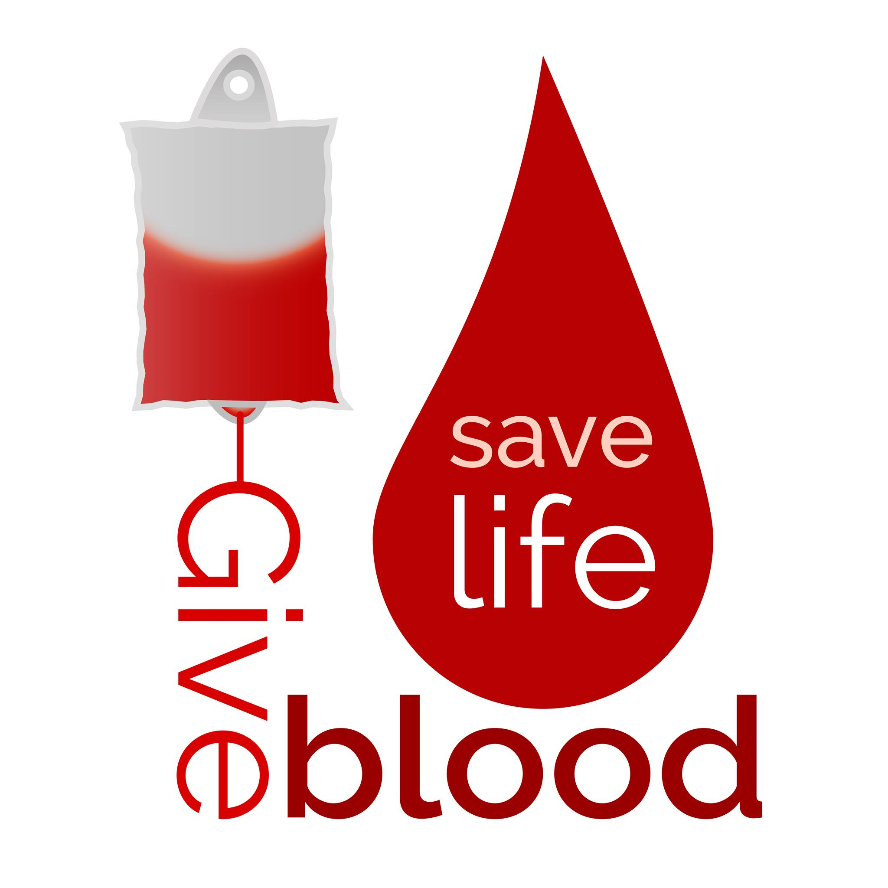

Benefits of Donating Blood
There’s no substitute for blood donation and giving blood regularly saves lives. One single donation can be split
into three separate parts, helping, saving or improvising the lives of patients. Just three teaspoons of blood can
save the life of a premature baby. If you donate blood, you can help in saving lives of many people.
Improves Heart Health
Donating blood improves your overall cardio vascular health. Increased level of iron in the
blood raises the chance of heart diseases. Regularly donating blood helps males in particular to reduce the amount of iron in the
blood. This can reduce the chance of heart attack by 88%. Additionally, regular blood donation can lower the risk
of severe cardio vascular events such as stroke by 33%.
Burns calories
Donating blood on a regular basis can also improve fitness. Donating one pint of blood (450ml) burns 650 calories
in donor’s body.
Enhances feeling of well being in elderly people
Many elderly people who are in good health have reported feeling invigorated and re-energized by giving blood
on a regular basis
Reduces the risk of cancer
Give blood to help lower your risk of cancer. According to the Miller- keystone blood center, consistent blood
donation is associated with lowered risks of cancers, including liver, lung, colon, stomach and throat cancers. Risk
levels drop in correlation with how often participants donate blood.
Saves lives
By donating blood, many lives are saved and hope is given to many whose situation may otherwise be hopeless.
Blood donors give such patients a second chance of life.
Free health screening done
In addition to all of these benefits, a donor receives a free prior health screening plus mini blood test. There will
be an Hb (Haemoglobin) level test as well as a blood pressure and body check. Blood is also tested for some
major diseases and the donor is immediately informed in strict confidentiality if any of these tests show positive
results.
Bring joy to many
When you donate blood, your help not only the patient whose life may depend on your donation, but also all those
who depend on that patient. The entire community will benefit from the spirit of generosity.
Blood donation is service to humankind
By donating blood you help the needy and save precious lives.
